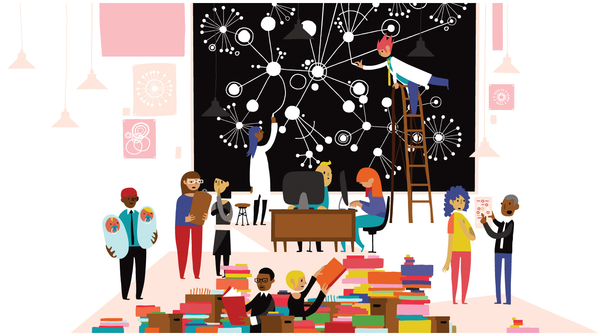

Research Methods¶
This lesson focuses on the research methods used by sociologists to study the social world.
Learning Objectives¶
By the end of this lesson, you will be able to:
Differentiate between the major kinds of research methods.
Understand why different topics are better suited to different research approaches
Evaluate a specific research methods.
Deadlines¶
Be sure to hand these in before the deadline
InQuizitive Chapter Set 2 (Thursday at 9:30am)
Study Design application (Sunday at 11:55pm)
Pushout reflection (Sunday at 11:55pm)

Data (asynchronous):¶
Pushout: The Criminalization of Black Girls in Schools¶

Inspired by the groundbreaking book of the same name by Monique W. Morris, Ed.D, PUSHOUT: THE CRIMINALIZATION OF BLACK GIRLS IN SCHOOLS, takes a deep dive into the lives of Black girls and the practices, cultural beliefs and policies that disrupts one of the most important factors in their lives - education. Alarmingly, African American girls are the fastest-growing population in the juvenile justice system and the only group of girls to disproportionately experience criminalization at every education level.
The film underscores the challenges Black girls face with insights from multiple experts across the country who have worked extensively in the fields of social and criminal justice, gender equality and educational equity, giving context to the crisis and providing a roadmap for how our educational system and those who interact with Black girls can provide a positive rather than punitive response to behaviors that are often misunderstood or misrepresented. Official description
We will use the documentary film Pushout as an opportunity to bring together many of the course concepts to date. Class will be asynchronous, so you should watch the film on your own and complete the reflection assignment.
Questions¶
If you have any questions at all about what you are supposed to do on this lesson, please remember I am here to help. Reach out any time so I can support your success.
Post it in the Slack #questions channel!
Signup for virtual office hours!
Email me or your TA.
Lesson Keywords¶
quantitative research
qualitative research
scientific method
literature review
hypothesis
variables
operational definition
correlation and causation
intervening variable
spurious correlation
ethnography
participant observation
reflexivity
interviews
closed and open-ended questions
replicability
validity
representativeness
bias
population
sample
content analsyis
experiment
independent variable
dependent variable
social network analysis
objectivity
reactivity
hawthorne effect
research ethics
surveys